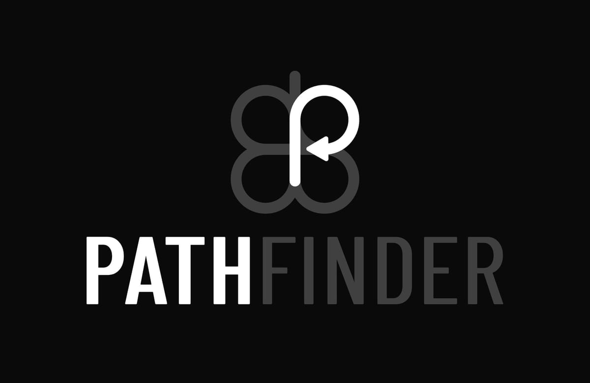

Advanced 3D flight data visualization. Powered by the Godot Engine — runs in the browser as a WebAssembly export, no installation required.

Pathfinder is an experimental visualization tool that renders flight data in a 3D environment. It runs directly in the browser as a Godot 4 web export (WebAssembly), requiring no installation.
This project is currently under active development. Features, interface and capabilities may change significantly as it evolves.
Visualize complete flight paths in three dimensions — altitude, speed and heading in real time.
Channel values, RSSI, latency and failsafe state overlaid on the 3D view.
Record and replay flights frame by frame to analyze technique and identify issues.
Runs as a Godot 4 WASM export — open the URL, grant camera permission, fly.